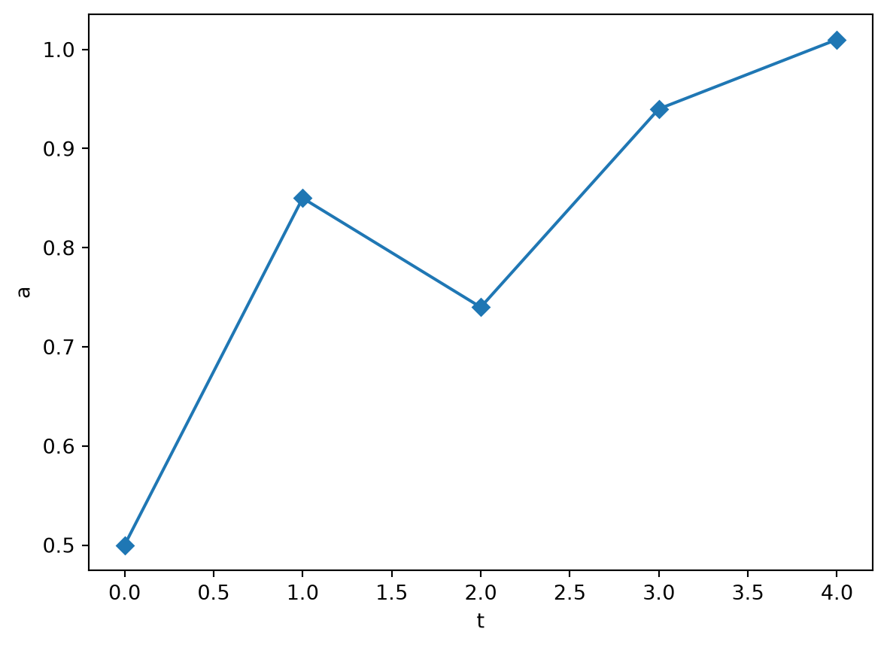
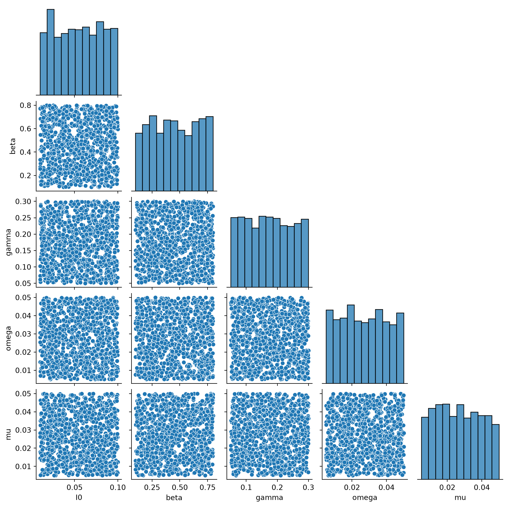

import matplotlib.pyplot as plt
a = [0.5, 0.85, 0.74, 0.94, 1.01]
plt.plot(a, marker='D')
plt.xlabel('t')
plt.ylabel('a')
plt.show()
Before training a surrogate, you need a dataset of simulator inputs (parameters) paired with outputs (realisations).
This walkthrough uses Python to prepare the data and expects that you have packages like matplotlib, pandas and numpy installed. However, you can use any language or packages you’re comfortable with.
METIS expects the timeseries realisations to be stored in parquet files in a flat format. For example, let’s consider a single realisation where the columm ‘a’ varies over time.

Then in a ‘flat’ format this data would have 5 rows, and two columns:
For the SIRDS simulator we also need to store the simulator’s inputs and disambiguate between different realisations with the same inputs. Simulator inputs are just treated as another column, and different realisations are disambiguated via the ‘rep’ column:
import numpy as np
import pandas as pd
def simulate_sirds(
I0=0.005, beta=0.4, gamma=0.1, omega=0.02, mu=0.01, T=365, dt=1.0, N=1000, seed=None
):
rng = np.random.default_rng(seed)
n = int(T / dt) + 1
I0_count = max(0, min(N, int(round(I0 * N))))
S = np.zeros(n, dtype=np.int32)
I = np.zeros(n, dtype=np.int32)
R = np.zeros(n, dtype=np.int32)
D = np.zeros(n, dtype=np.int32)
S[0], I[0], R[0], D[0] = N - I0_count, I0_count, 0, 0
for k in range(n - 1):
p_inf = 1.0 - np.exp(-beta * I[k] / N * dt)
p_rec = 1.0 - np.exp(-gamma * dt)
p_die = 1.0 - np.exp(-mu * dt)
p_sus = 1.0 - np.exp(-omega * dt)
new_I = rng.binomial(S[k], p_inf)
# Competing risks: each infected individual can recover, die, or stay infected.
# Use a multinomial draw so recovery + death never exceeds I[k].
p_stay = max(0.0, 1.0 - p_rec - p_die)
outcomes = rng.multinomial(I[k], [p_rec, p_die, p_stay])
new_R = outcomes[0]
new_D = outcomes[1]
new_S = rng.binomial(R[k], p_sus)
S[k + 1] = S[k] - new_I + new_S
I[k + 1] = I[k] + new_I - new_R - new_D
R[k + 1] = R[k] + new_R - new_S
D[k + 1] = D[k] + new_D
return S, I, R, D# the simulator inputs
params = dict(I0=0.005, beta=0.4, gamma=0.1, omega=0.02, mu=0.01)
# number of realisations we would like
n_reps = 5
frames = []
for rep in range(n_reps):
S, I, R, D = simulate_sirds(seed=rep, **params, T=100)
S,I,R,D=S[1:],I[1:],R[1:], D[1:] # we drop t=0 since for this simulator it carries no information
t = np.arange(len(S))
frames.append(pd.DataFrame({
"rep": rep,
"t": t,
"I_t": I,
"S_t": S,
"R_t": R,
"I_0": params["I0"],
"beta": params["beta"],
"gamma": params["gamma"],
"omega": params["omega"],
"mu":params["mu"],
}))
df = pd.concat(frames, ignore_index=True)
print(f"reps: {df['rep'].unique()}")
dfreps: [0 1 2 3 4]| rep | t | I_t | S_t | R_t | I_0 | beta | gamma | omega | mu | |
|---|---|---|---|---|---|---|---|---|---|---|
| 0 | 0 | 0 | 7 | 993 | 0 | 0.005 | 0.4 | 0.1 | 0.02 | 0.01 |
| 1 | 0 | 1 | 6 | 993 | 1 | 0.005 | 0.4 | 0.1 | 0.02 | 0.01 |
| 2 | 0 | 2 | 8 | 990 | 2 | 0.005 | 0.4 | 0.1 | 0.02 | 0.01 |
| 3 | 0 | 3 | 13 | 985 | 2 | 0.005 | 0.4 | 0.1 | 0.02 | 0.01 |
| 4 | 0 | 4 | 19 | 979 | 2 | 0.005 | 0.4 | 0.1 | 0.02 | 0.01 |
| ... | ... | ... | ... | ... | ... | ... | ... | ... | ... | ... |
| 495 | 4 | 95 | 80 | 330 | 429 | 0.005 | 0.4 | 0.1 | 0.02 | 0.01 |
| 496 | 4 | 96 | 89 | 327 | 421 | 0.005 | 0.4 | 0.1 | 0.02 | 0.01 |
| 497 | 4 | 97 | 96 | 327 | 413 | 0.005 | 0.4 | 0.1 | 0.02 | 0.01 |
| 498 | 4 | 98 | 98 | 330 | 408 | 0.005 | 0.4 | 0.1 | 0.02 | 0.01 |
| 499 | 4 | 99 | 99 | 326 | 410 | 0.005 | 0.4 | 0.1 | 0.02 | 0.01 |
500 rows × 10 columns
When building a dataset of simulator realisations its important to consider which regions of the simulator’s parameter (or input) space you sample and how they are sampled. For example, a simulator may be more sensitive in a certain parameter region or parameters physically constrained to lie within a particular range. For our example we will simply sample uniformly within reasonable ranges but another popular approach is Latin Hypercube Sampling (see Scipy Latin Hypercube).
import seaborn as sns
N_PARAMS = 1_000
# reproducible parameter sampling
param_rng = np.random.default_rng(42)
I0_vals = param_rng.uniform(0.01, 0.1, N_PARAMS)
beta_vals = param_rng.uniform(0.10, 0.80, N_PARAMS)
gamma_vals = param_rng.uniform(0.05, 0.30, N_PARAMS)
omega_vals = param_rng.uniform(0.005, 0.05, N_PARAMS)
mu_vals = param_rng.uniform(0.005, 0.05, N_PARAMS)
#visualise the sampled space
sns.pairplot(
pd.DataFrame({'I0':I0_vals, 'beta':beta_vals, 'gamma':gamma_vals, 'omega':omega_vals, 'mu':mu_vals}), corner=True,height=2
)
Given our parameters we can now create an entire dataset.
import time
N_REPS = 5
T, DT = 200, 1.0
n_steps_sim = int(T / DT) + 1 # simulator produces this many steps including t=0
n_steps = n_steps_sim - 1 # we drop t=0 since it carries no information
total_rows = N_PARAMS * N_REPS * n_steps
# preallocate
t_template = np.arange(1, n_steps_sim) * DT
rep = np.empty(total_rows, dtype=np.int32)
t_col = np.empty(total_rows, dtype=np.float32)
I_col = np.empty(total_rows, dtype=np.int32)
S_col = np.empty(total_rows, dtype=np.int32)
R_col = np.empty(total_rows, dtype=np.int32)
D_col = np.empty(total_rows, dtype=np.int32)
I0_col = np.empty(total_rows, dtype=np.float32)
beta_col = np.empty(total_rows, dtype=np.float32)
gamma_col = np.empty(total_rows, dtype=np.float32)
omega_col = np.empty(total_rows, dtype=np.float32)
mu_col = np.empty(total_rows, dtype=np.float32)
print(f"Running {N_PARAMS} × {N_REPS} = {N_PARAMS * N_REPS} simulations...")
t0 = time.time()
row = 0
for i in range(N_PARAMS):
params = dict(
I0=I0_vals[i], beta=beta_vals[i], gamma=gamma_vals[i], omega=omega_vals[i], mu=mu_vals[i]
)
for r in range(N_REPS):
seed = i * N_REPS + r # unique across all runs
S, I, R,D = simulate_sirds(seed=seed, T=T, dt=DT, **params)
sl = slice(row, row + n_steps)
rep[sl] = r + 1 # 1..5
t_col[sl] = t_template
I_col[sl] = I[1:]
S_col[sl] = S[1:]
R_col[sl] = R[1:]
D_col[sl] = D[1:]
I0_col[sl] = params["I0"]
beta_col[sl] = params["beta"]
gamma_col[sl] = params["gamma"]
omega_col[sl] = params["omega"]
mu_col[sl] = params["mu"]
row += n_steps
if (i + 1) % 100 == 0:
print(f" {i + 1}/{N_PARAMS} inputs done ({time.time() - t0:.1f}s)")Running 1000 × 5 = 5000 simulations...
100/1000 inputs done (0.4s)
200/1000 inputs done (0.7s)
300/1000 inputs done (1.0s)
400/1000 inputs done (1.4s)
500/1000 inputs done (1.7s)
600/1000 inputs done (2.1s)
700/1000 inputs done (2.4s)
800/1000 inputs done (2.7s)
900/1000 inputs done (3.1s)
1000/1000 inputs done (3.4s)| rep | t | I_t | S_t | R_t | D_t | I_0 | beta | gamma | omega | mu | |
|---|---|---|---|---|---|---|---|---|---|---|---|
| 0 | 1 | 1.0 | 75 | 909 | 16 | 0 | 0.079656 | 0.143444 | 0.260683 | 0.042315 | 0.037224 |
| 1 | 1 | 2.0 | 54 | 906 | 35 | 5 | 0.079656 | 0.143444 | 0.260683 | 0.042315 | 0.037224 |
| 2 | 1 | 3.0 | 45 | 900 | 46 | 9 | 0.079656 | 0.143444 | 0.260683 | 0.042315 | 0.037224 |
| 3 | 1 | 4.0 | 32 | 903 | 56 | 9 | 0.079656 | 0.143444 | 0.260683 | 0.042315 | 0.037224 |
| 4 | 1 | 5.0 | 23 | 902 | 65 | 10 | 0.079656 | 0.143444 | 0.260683 | 0.042315 | 0.037224 |
| ... | ... | ... | ... | ... | ... | ... | ... | ... | ... | ... | ... |
| 999995 | 5 | 196.0 | 35 | 212 | 271 | 482 | 0.035281 | 0.464050 | 0.074520 | 0.013116 | 0.032685 |
| 999996 | 5 | 197.0 | 37 | 214 | 267 | 482 | 0.035281 | 0.464050 | 0.074520 | 0.013116 | 0.032685 |
| 999997 | 5 | 198.0 | 36 | 213 | 266 | 485 | 0.035281 | 0.464050 | 0.074520 | 0.013116 | 0.032685 |
| 999998 | 5 | 199.0 | 34 | 214 | 267 | 485 | 0.035281 | 0.464050 | 0.074520 | 0.013116 | 0.032685 |
| 999999 | 5 | 200.0 | 34 | 218 | 263 | 485 | 0.035281 | 0.464050 | 0.074520 | 0.013116 | 0.032685 |
1000000 rows × 11 columns
And thats it as far as data preparation is concerned! To actually save this dataframe as a parquet file simply use
Next we’ll look at how Hydra works, and writing a dataset config file.